כלים למחנך
מפתח לכלים של המורה והמחנך – משמעת בכיתה, קול המורה, בינה מלאכותית ופרומפטים, חומרים לכיתה ואפליקציות
213 פריטים
משמעת וסמכות בכיתה
62 פריטיםהמורה – הדרכה, דרשות וכלים
40 פריטיםסדרת שיעורי חינוך – הרב יהודה טאוב
41 פריטיםקול המורה – מחקרים
10 פריטיםבינה מלאכותית ופרומפטים למורה
12 פריטיםחומרים לכיתה
28 פריטיםסיכומי מחקר על המאמרים שלי
3 פריטיםאפליקציות ומדריכי עיצוב
17 פריטיםמשמעת וסמכות בכיתה (62)
ניהול כיתה – מדריך להפחתת שיבושים
סיכום מלא של שיטת לינדה קארדוס להפחתת שיבושים בכיתה.
20 דרכים לתפוס תשומת לב בכיתה רועשת
מסודרות לפי קלות יישום ויעילות מיידית — מהמהיר ביותר לאסטרטגיות ארוכות טווח
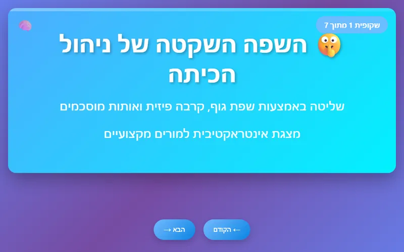
השפה השקטה של ניהול הכיתה
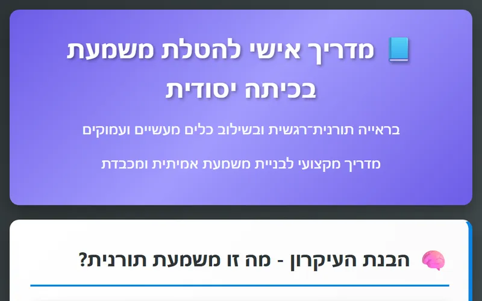
מדריך אישי להטלת משמעת בכיתה יסודית
המשמעת החיצונית היא כלי לייצר משמעת פנימית
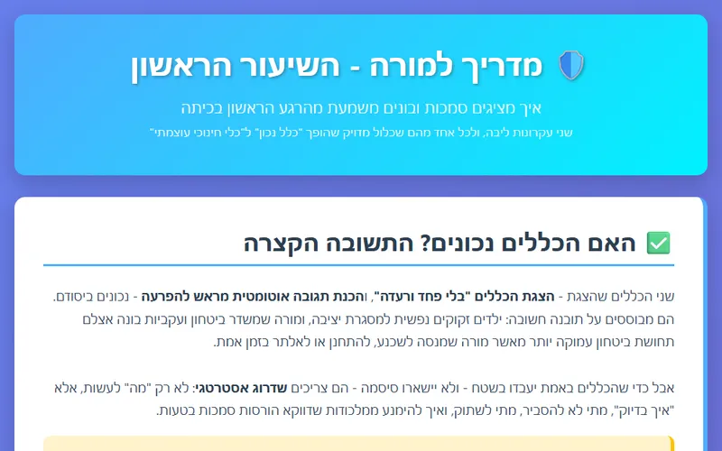
מדריך למורה: השיעור הראשון - סמכות ומשמעת
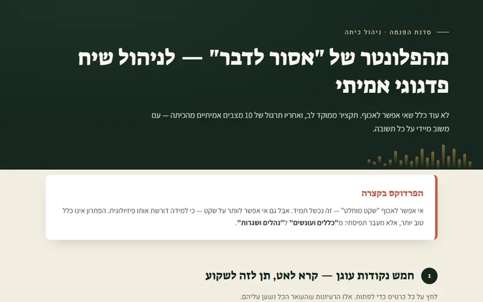
מהפלונטר לפדגוגיה: סדנת ניהול שיח ושקט בכיתה
לא עוד כלל שאי אפשר לאכוף. תקציר ממוקד לב, ואחריו תרגול של 10 מצבים אמיתיים מהכיתה — עם משוב מיידי על כל תשובה…
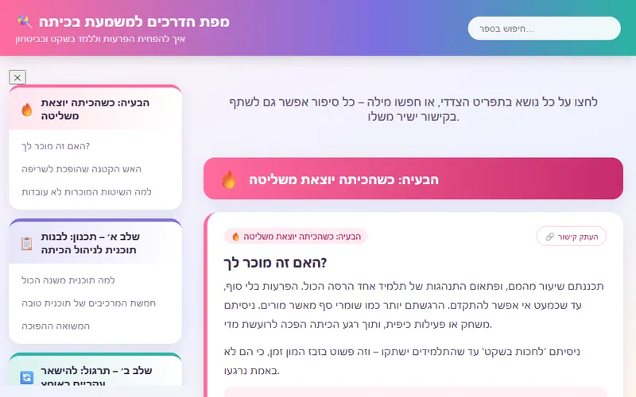
מפת הדרכים למשמעת בכיתה
תכננתם שיעור מהמם, ופתאום התנהגות של תלמיד אחד הרסה הכול. הפרעות בלי סוף, עד שכמעט אי אפשר להתקדם. הרגשתם יותר…
ספר ניהול הכיתה — מדריך מקיף למחנך
כל השיטות, הכלים והחכמה של מורים מנוסים — ב מדריך אחד שלם, מהמיידי ועד לאסטרטגי
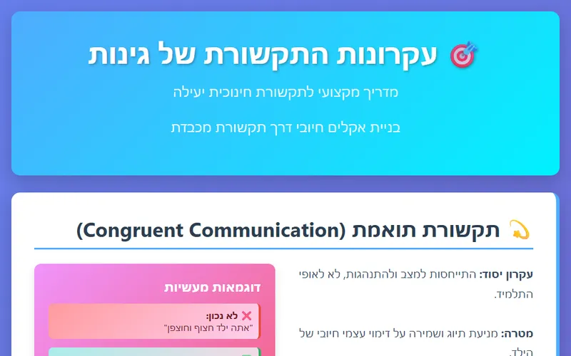
עקרונות התקשורת של גינות
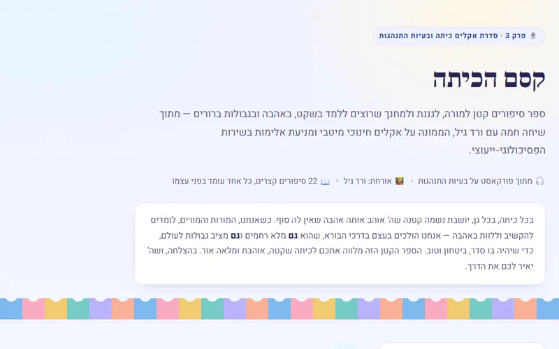
קסם הכיתה
ספר סיפורים קטן למורה, לגננת ולמחנך שרוצים ללמד בשקט, באהבה ובגבולות ברורים — מתוך שיחה חמה עם ורד גיל, הממונה…
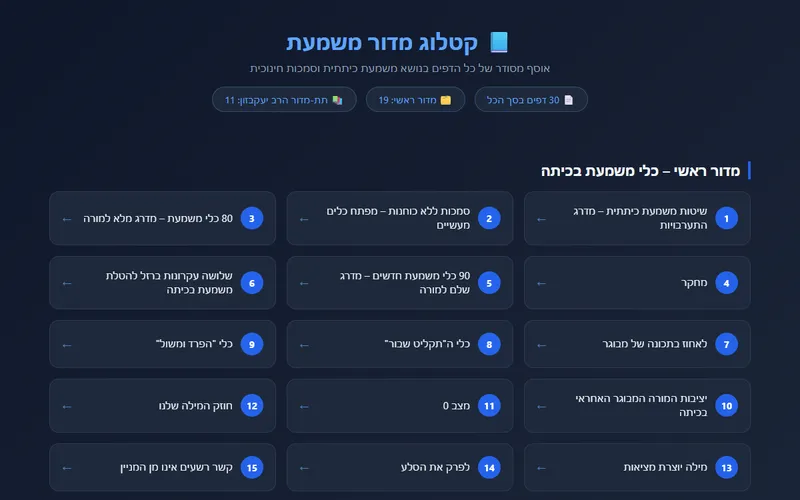
משמעת – קטלוג
קטלוג משמעת בכיתה טוען... 📘 קטלוג מדור משמעת אוסף מסודר של כל הדפים בנושא משמעת כיתתית וסמכות חינוכית 📄 30 דפי…
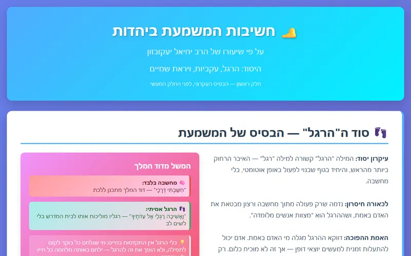
חשיבות המשמעת ביהדות 1
ל פי שיעורו של הרב יחיאל יעקובזון היסוד: הרגל, עקביות, ויראת שמיים חלק ראשון — הבסיס העקרוני, לפני החלק המעשי …
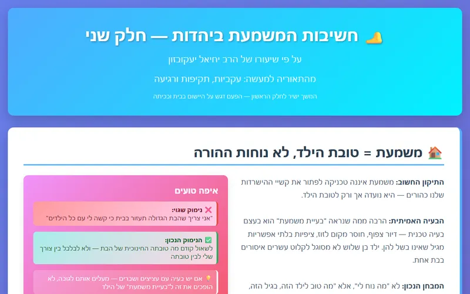
חשיבות המשמעת ביהדות — חלק שני
על פי שיעורו של הרב יחיאל יעקובזון מהתאוריה למעשה: עקביות, תקיפות ורגיעה המשך ישיר לחלק הראשון — הפעם דגש על ה…
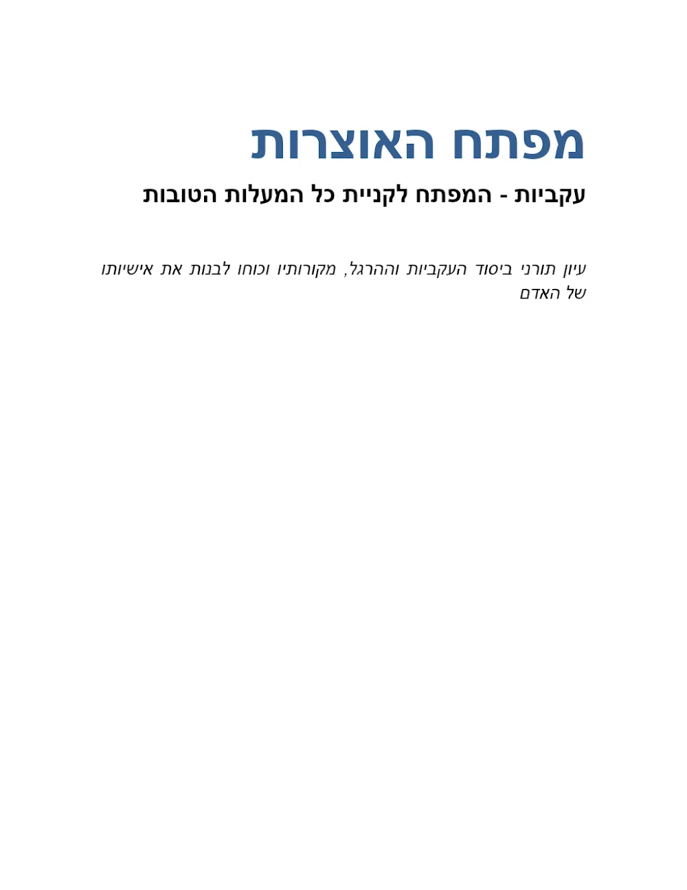
מפתח האוצרות!
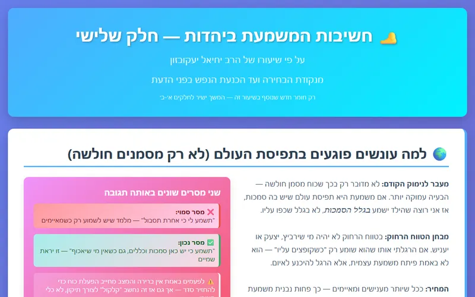
3- חשיבות המשמעת ביהדות — חלק שלישי
חשיבות המשמעת ביהדות - חלק שלישי 🦶 חשיבות המשמעת ביהדות — חלק שלישי על פי שיעורו של הרב יחיאל יעקובזון מנקודת …
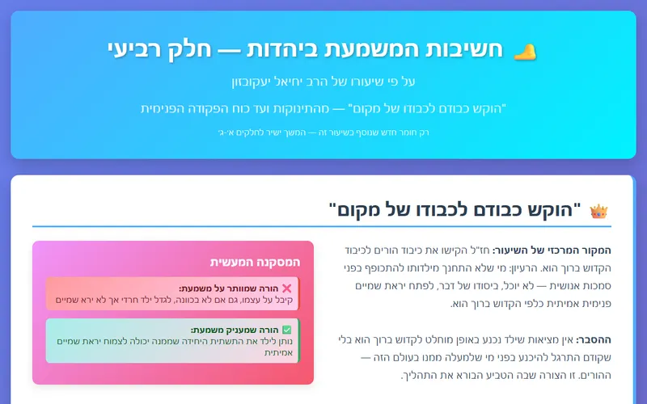
4 - חשיבות המשמעת ביהדות — חלק רביעי חשיבות המשמעת ביהדות — חלק רביעי
חשיבות המשמעת ביהדות - חלק רביעי 🦶 חשיבות המשמעת ביהדות — חלק רביעי על פי שיעורו של הרב יחיאל יעקובזון "הוקש כ…
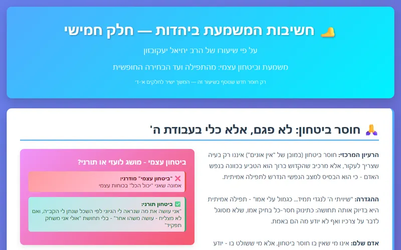
5 - חשיבות המשמעת ביהדות — חלק חמישי חשיבות המשמעת ביהדות — חלק חמישי
חשיבות המשמעת ביהדות - חלק חמישי 🦶 חשיבות המשמעת ביהדות — חלק חמישי על פי שיעורו של הרב יחיאל יעקובזון משמעת ו…
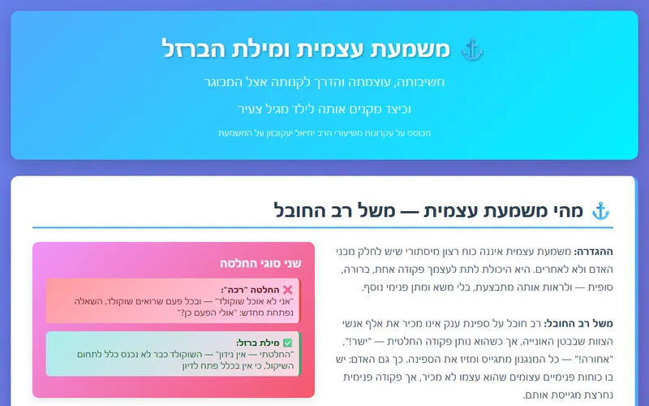
משמעת עצמית ומילת הברזל
⚓ משמעת עצמית ומילת הברזל חשיבותה, עוצמתה והדרך לקנותה אצל המבוגר וכיצד מקנים אותה לילד מגיל צעיר מבוסס על עקר…
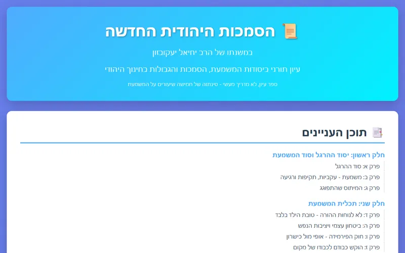
ספר - הסמכות היהודית החדשה
הסמכות היהודית החדשה 📜 הסמכות היהודית החדשה במשנתו של הרב יחיאל יעקובזון עיון תורני ביסודות המשמעת, הסמכות והג…
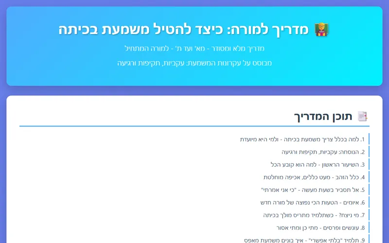
מדריך למורה: כיצד להטיל משמעת בכיתה
מדריך מלא ומסודר - מא' ועד ת' - למורה המתחיל מבוסס על עקרונות המשמעת: עקביות, תקיפות ורגיעה 📑 תוכן המדריך 1. ל…
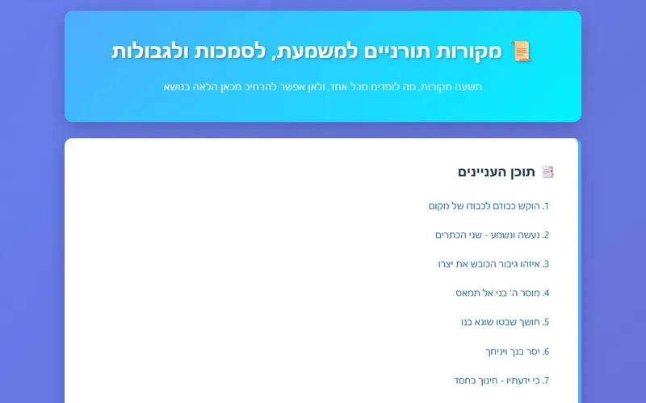
מקורות תורניים למשמעת, לסמכות ולגבולות
📜 מקורות תורניים למשמעת, לסמכות ולגבולות תשעה מקורות, מה לומדים מכל אחד, ולאן אפשר להרחיב מכאן הלאה בנושא 📑 תו…
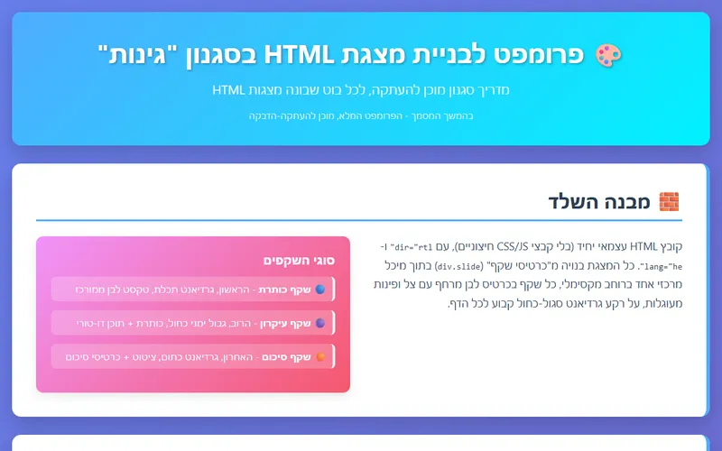
פרומפט לבניית מצגת HTML בסגנון "גינות" פרומפט לבניית מצגת HTML בסגנון
וט שבונה מצגות HTML בהמשך המסמך - הפרומפט המלא, מוכן להעתקה-הדבקה 🧱 מבנה השלד קובץ HTML עצמאי יחיד (בלי קבצי C…
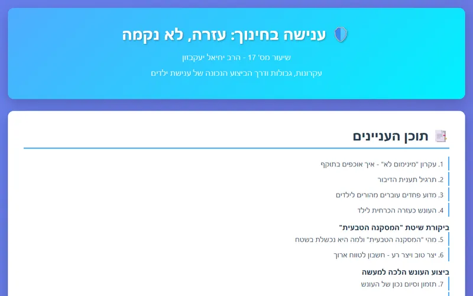
ענישה בחינוך: עזרה, לא נקמה
שיעור מס' 17 - הרב יחיאל יעקבזון עקרונות, גבולות ודרך הביצוע הנכונה של ענישת ילדים 📑 תוכן העניינים 1. עקרון "מ…
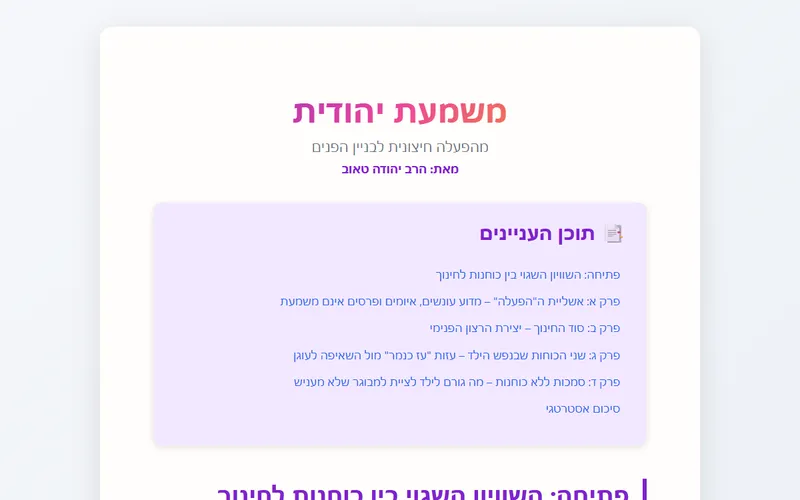
משמעת יהודית מהפעלה חיצונית לבניין הפנים
מאת: הרב יהודה טאוב 📑 תוכן העניינים פתיחה: השוויון השגוי בין כוחנות לחינוך פרק א: אשליית ה"הפעלה" – מדוע עונשי…
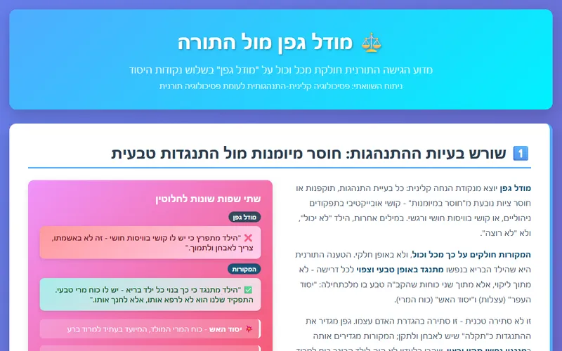
מודל גפן מול התורה
מחלוקת יסודית בחינוך ⚖️ מודל גפן מול התורה מדוע הגישה התורנית חולקת מכל וכול על "מודל גפן" בשלוש נקודות היסוד …
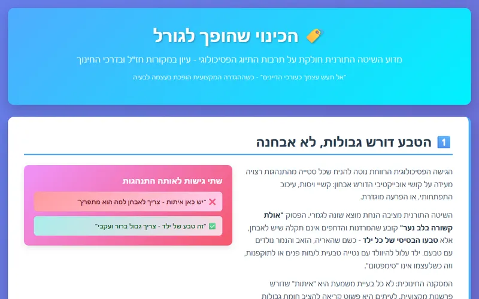
מדוע השיטה התורנית חולקת על תרבות התיוג הפסיכולוגי
עיון במקורות חז"ל ובדרכי החינוך "אל תעש עצמך כעורכי הדיינים" - כשההגדרה המקצועית הופכת בעצמה לבעיה 1️⃣ הטבע דו…
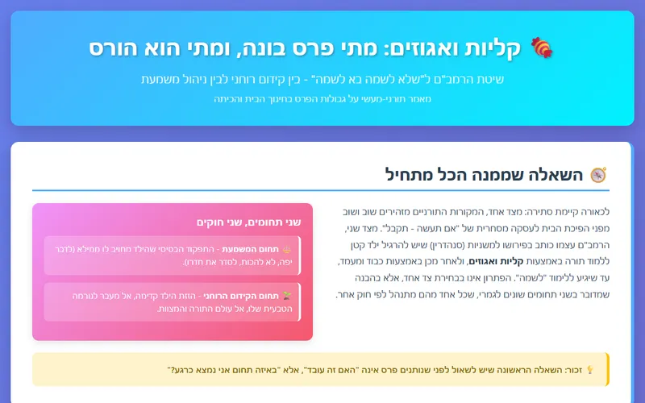
קליות ואגוזים: מתי פרס בונה, ומתי הוא הורס
שיטת הרמב"ם ל"שלא לשמה בא לשמה" - בין קידום רוחני לבין ניהול משמעת מאמר תורני-מעשי על גבולות הפרס בחינוך הבית …
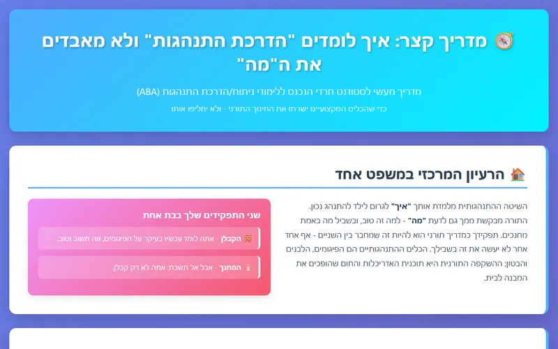
מדריך קצר: איך לומדים "הדרכת התנהגות" ולא מאבדים את ה"מה"
🧭 מדריך קצר: איך לומדים "הדרכת התנהגות" ולא מאבדים את ה"מה" מדריך מעשי לסטודנט חרדי הנכנס ללימודי ניתוח/הדרכת …
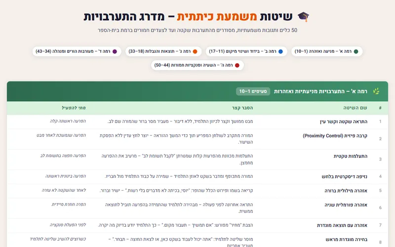
שיטות משמעת כיתתית – מדרג התערבויות
🎓 שיטות משמעת כיתתית – מדרג התערבויות 50 כלים ותגובות משמעתיות, מסודרים מהתערבות שקטה ועד לצעדים חמורים ברמת ב…
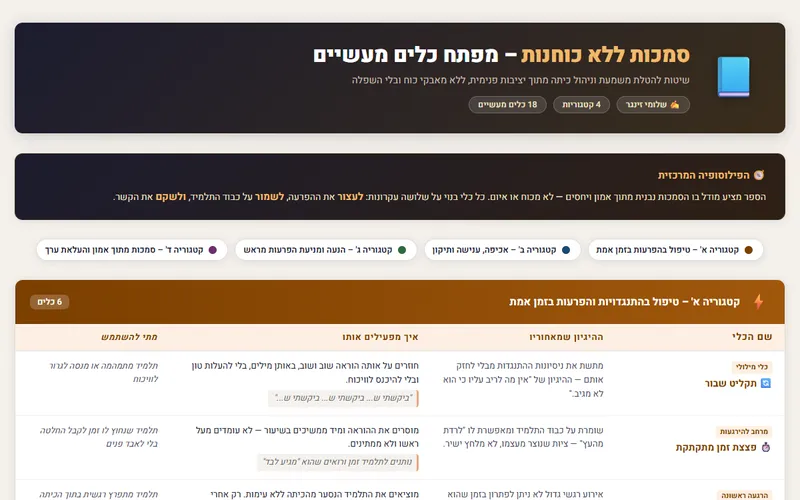
סמכות ללא כוחנות – מפתח כלים מעשיים
📘 סמכות ללא כוחנות – מפתח כלים מעשיים שיטות להטלת משמעת וניהול כיתה מתוך יציבות פנימית, ללא מאבקי כוח ובלי השפ…
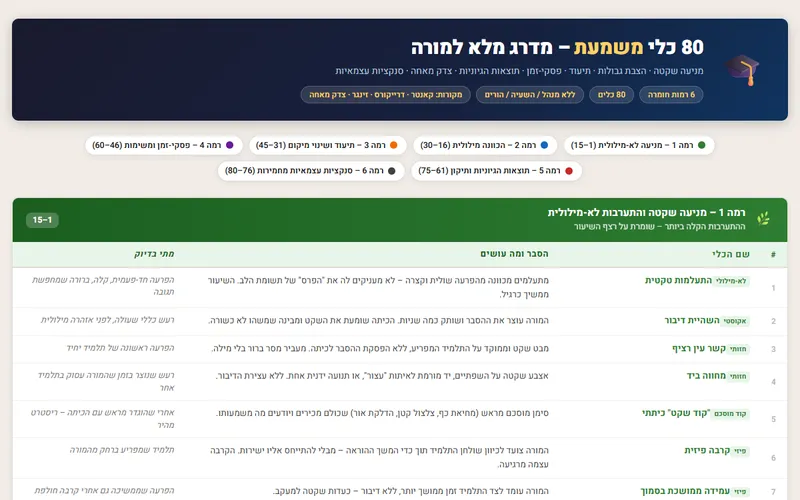
80 כלי משמעת – מדרג מלא למורה
🎓 80 כלי משמעת – מדרג מלא למורה מניעה שקטה · הצבת גבולות · תיעוד · פסקי-זמן · תוצאות הגיוניות · צדק מאחה · סנק…
התמודדות עם הפרעות התנהגות בילדים
ך מקצועי התמודדות עם הפרעות התנהגות בילדים 9 אסטרטגיות של תמיכה התנהגותית חיובית – שלב אחר שלב 1 🎯 צרו ציפיות …
מדריך מקצועי למורים תלמיד עם ODD בכיתה שלי
הפרעת התנגדות מתריסה – כלים, אסטרטגיות ומה לעשות ברגע האמת 🔍 מה זה ODD? ODD – Oppositional Defiant Disorder , …
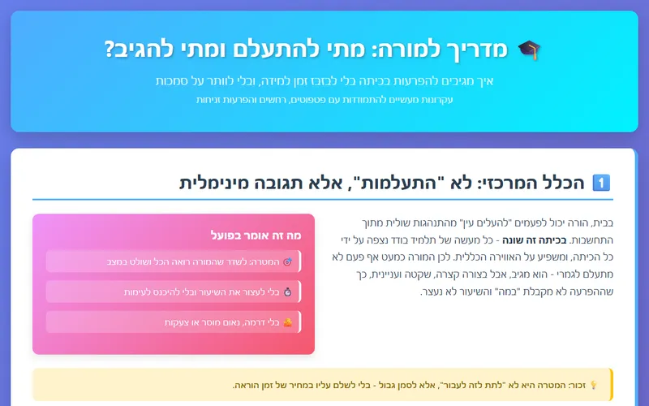
מדריך למורה: מתי להתעלם ומתי להגיב?
🎓 מדריך למורה: מתי להתעלם ומתי להגיב? איך מגיבים להפרעות בכיתה בלי לבזבז זמן למידה, ובלי לוותר על סמכות עקרונו…
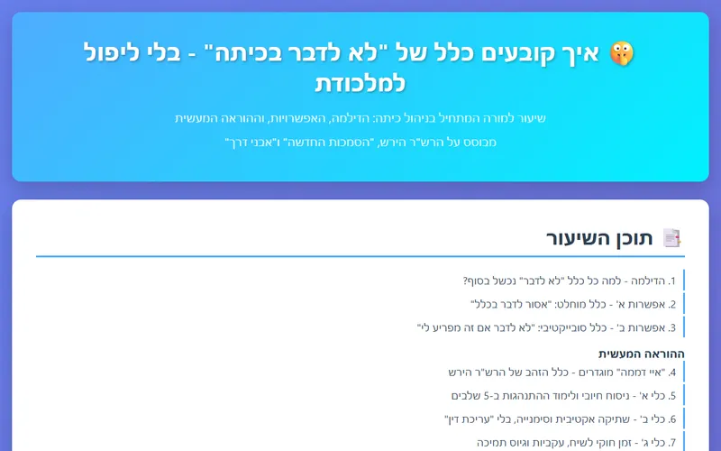
איך קובעים כלל של לא לדבר בכיתה - בלי ליפול למלכודת
איך קובעים כלל של "לא לדבר בכיתה" בלי ליפול למלכודת 🤫 איך קובעים כלל של "לא לדבר בכיתה" - בלי ליפול למלכודת שי…
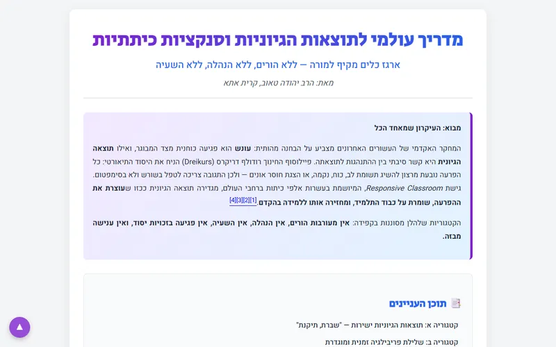
משמעת – מחקר
מדריך עולמי לתוצאות הגיוניות וסנקציות כיתתיות | ארגז כלים מקיף למורה מדריך עולמי לתוצאות הגיוניות וסנקציות כית…
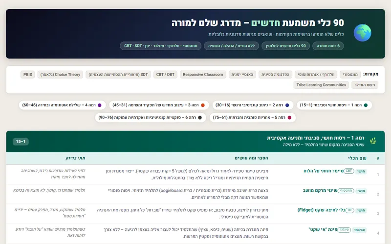
90 כלי משמעת חדשים – מדרג שלם למורה
0 כלי משמעת חדשים – מדרג שלם למורה כלים שלא הופיעו ברשימות הקודמות · שואבים מגישות פדגוגיות גלובליות 6 רמות חו…
שלושה עקרונות ברזל להטלת משמעת בכיתה
ביעילות, בביטחון, וללא שחיקה מבוסס על משל הסוכריות מבית הכנסת 🍬 המשל: זריקת הסוכריות בבר-מצווה סיפור שמורים מס…
לאחוז בתכונה של מבוגר
| משמעת מתוך יציבות מדריך מעשי למורה משמעת בלי שחיקה לאחוז בתכונה של מבוגר הסמכות בכיתה מתחילה לא במה שהתלמיד …
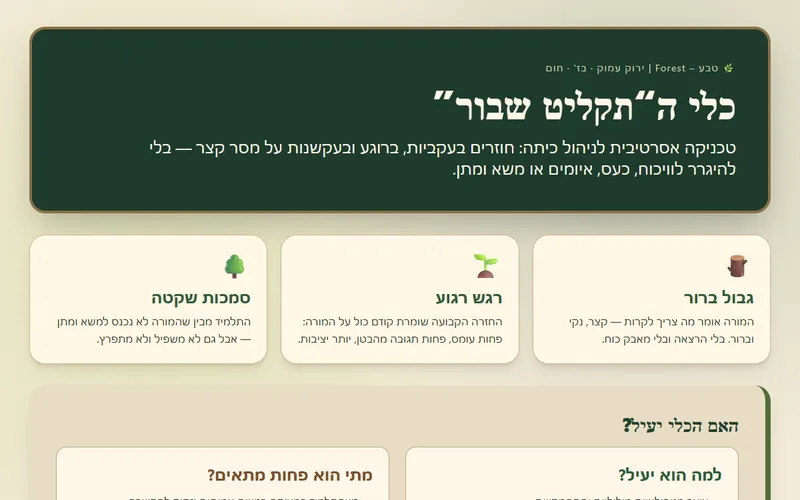
כלי ה“תקליט שבור”
טכניקה אסרטיבית לניהול כיתה: חוזרים בעקביות, ברוגע ובעקשנות על מסר קצר — בלי להיגרר לוויכוח, כעס, איומים או מש…
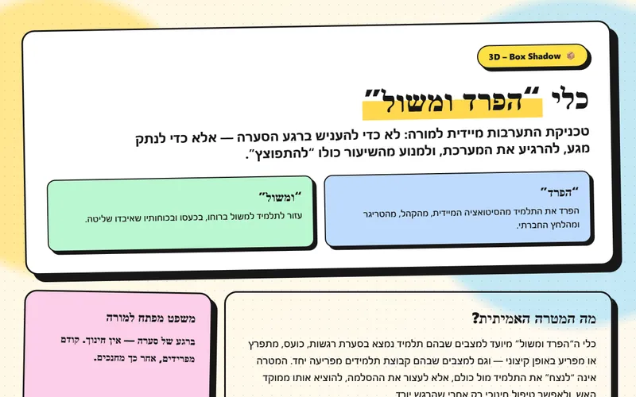
כלי “הפרד ומשול”
טכניקת התערבות מיידית למורה: לא כדי להעניש ברגע הסערה — אלא כדי לנתק מגע, להרגיע את המערכת, ולמנוע מהשיעור כול…
יציבות המורה המבוגר האחראי בכיתה
לפני שמנהלים כיתה — מנהלים את עצמנו. מורה יציב אינו נבהל, אינו מתפרק מכל הפרעה, ואינו לוקח את מבחני הגבול באופ…
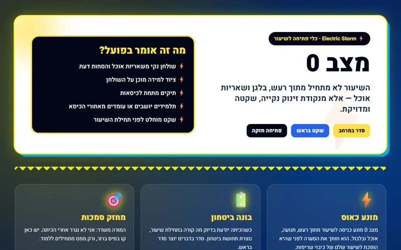
משמעת – מצב 0
מצב 0 | שגרת פתיחה חשמלית לכיתה ⚡ ⚡ Electric Storm · כלי פתיחה לשיעור מצב 0 השיעור לא מתחיל מתוך רעש, בלגן ושא…
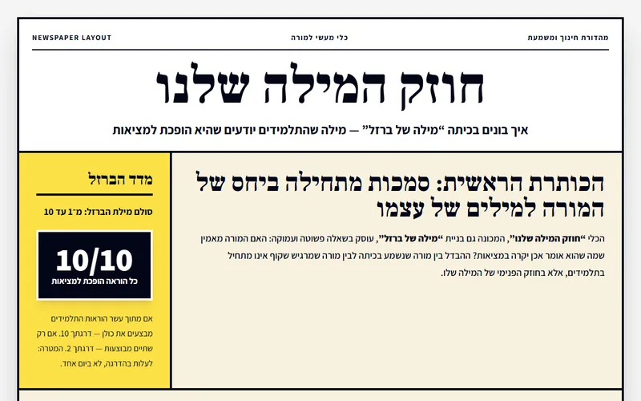
חוזק המילה שלנו
| מילה של ברזל מהדורת חינוך ומשמעת כלי מעשי למורה Newspaper Layout חוזק המילה שלנו איך בונים בכיתה “מילה של בר…
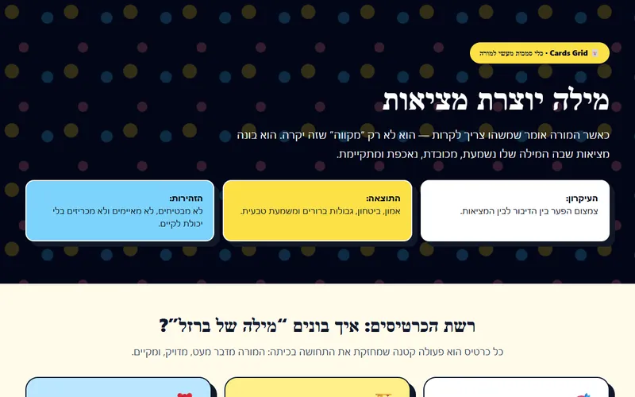
מילה יוצרת מציאות
| Cards Grid 🃏 Cards Grid · כלי סמכות מעשי למורה מילה יוצרת מציאות כאשר המורה אומר שמשהו צריך לקרות — הוא לא ר…
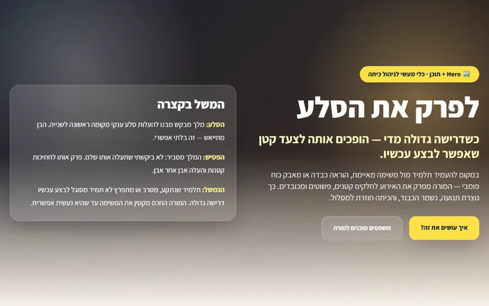
לפרק את הסלע
| כלי לניהול כיתה 🖼️ Hero + תוכן · כלי מעשי לניהול כיתה לפרק את הסלע כשדרישה גדולה מדי — הופכים אותה לצעד קטן …
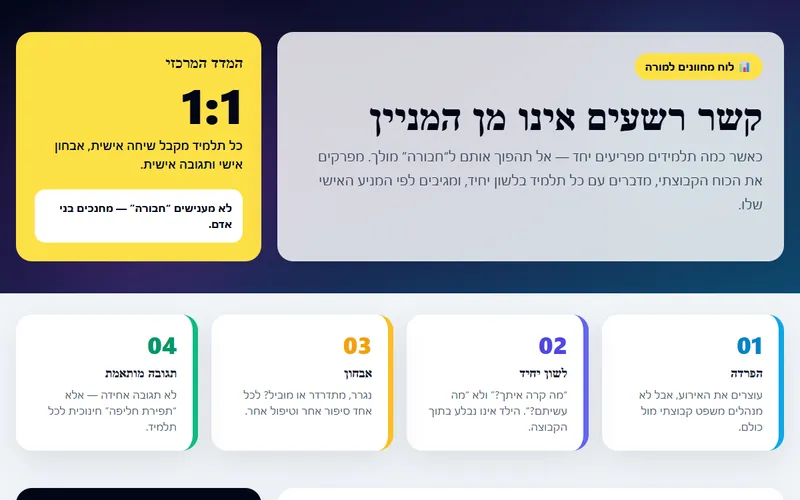
קשר רשעים אינו מן המניין
| Dashboard 📊 לוח מחוונים למורה קשר רשעים אינו מן המניין כאשר כמה תלמידים מפריעים יחד — אל תהפוך אותם ל“חבורה”…
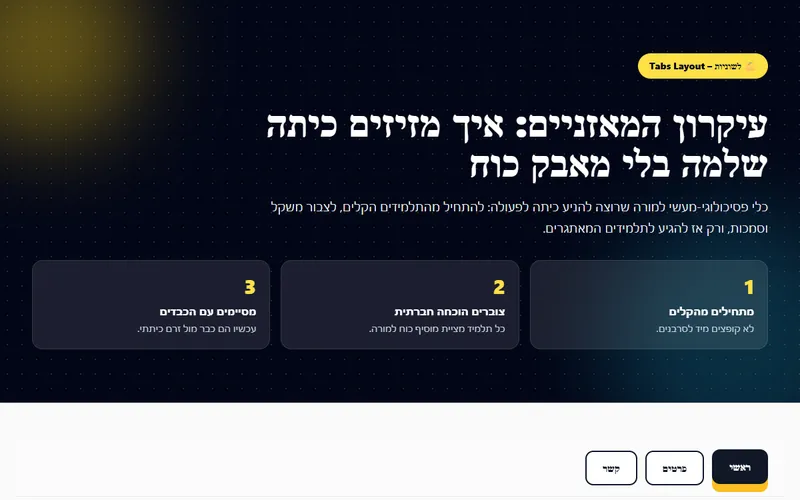
עיקרון המאזניים: איך מזיזים כיתה שלמה בלי מאבק כוח
כלי פסיכולוגי-מעשי למורה שרוצה להניע כיתה לפעולה: להתחיל מהתלמידים הקלים, לצבור משקל וסמכות, ורק אז להגיע לתלמ…
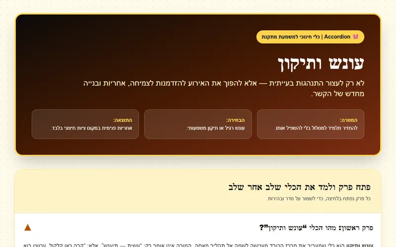
עונש ותיקון
| Accordion 🪗 Accordion | כלי חינוכי למשמעת מתקנת עונש ותיקון לא רק לעצור התנהגות בעייתית — אלא להפוך את האירו…
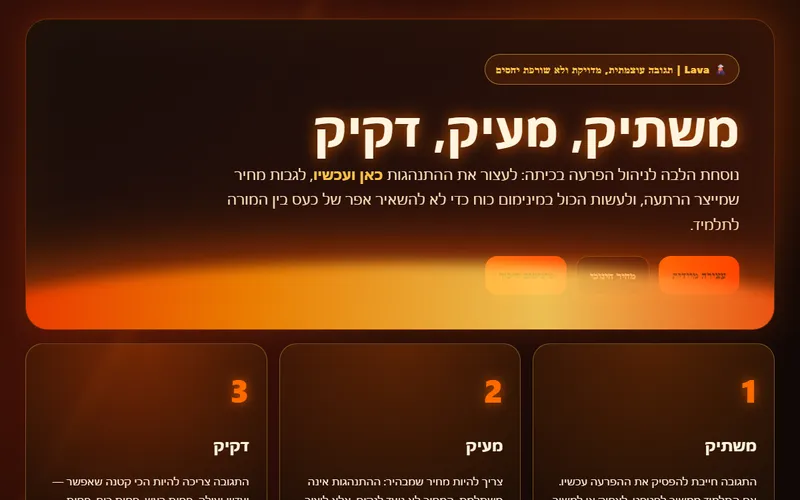
משתיק, מעיק, דקיק
| Lava 🌋 Lava | תגובה עוצמתית, מדויקת ולא שורפת יחסים משתיק, מעיק, דקיק נוסחת הלבה לניהול הפרעה בכיתה: לעצור א…
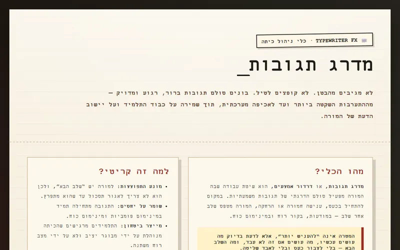
מדרג תגובות_
לא מגיבים מהבטן. לא קופצים לטיל. בונים סולם תגובות ברור, רגוע ומדויק — מההתערבות השקטה ביותר ועד לאכיפה מערכתי…
איזה שיקוי עובר ממני לתלמיד?
אותה פעולה חינוכית יכולה להרגיש כמו אמון, או כמו התקפה. ההבדל אינו רק במה שהמורה עושה — אלא באיזו כוונה, אנרגי…
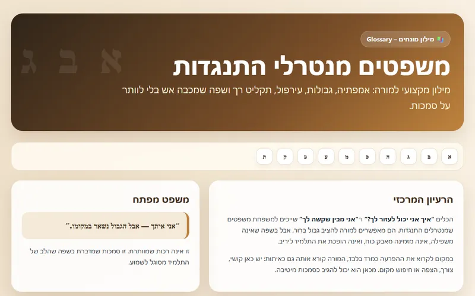
משפטים מנטרלי התנגדות
מילון מונחים 📚 מילון מונחים – Glossary משפטים מנטרלי התנגדות מילון מקצועי למורה: אמפתיה, גבולות, עירפול, תקליט…
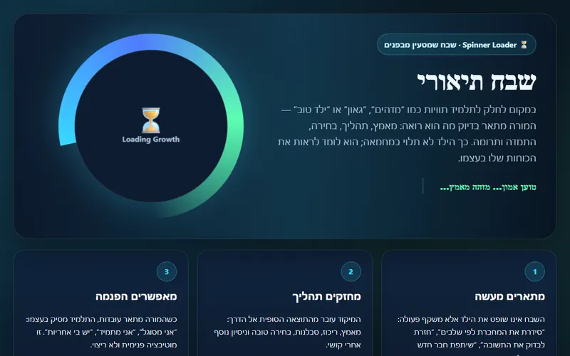
שבח תיאורי
Spinner Loader ⏳ Spinner Loader · שבח שמטעין מבפנים שבח תיאורי במקום לחלק לתלמיד תוויות כמו “מדהים”, “גאון” או…
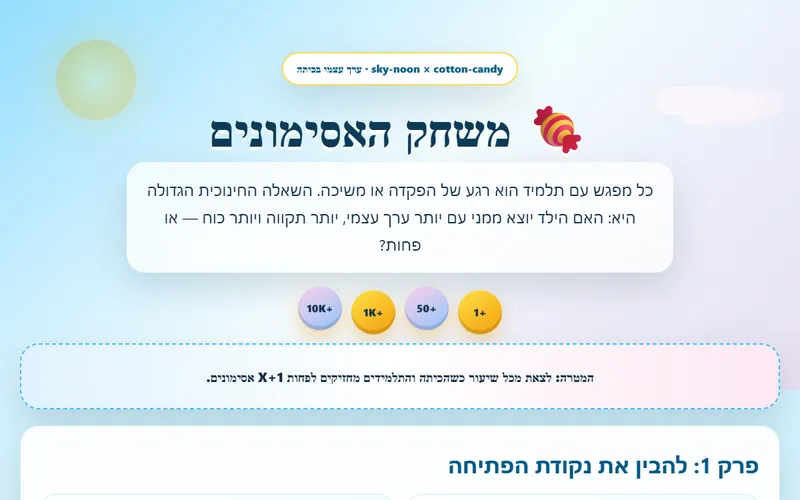
משחק האסימונים
בניית ערך עצמי בכיתה sky-noon × cotton-candy · ערך עצמי בכיתה 🍬 משחק האסימונים כל מפגש עם תלמיד הוא רגע של הפק…
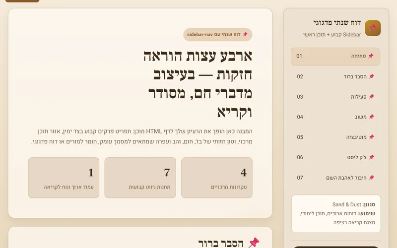
ארבע עצות הוראה חזקות
דוח שנתי עם sidebar-nav דלג לתוכן 📌 דוח שנתי פדגוגי Sidebar קבוע + תוכן ראשי 📌 פתיחה 01 📌 הסבר ברור 02 📌 פעילו…
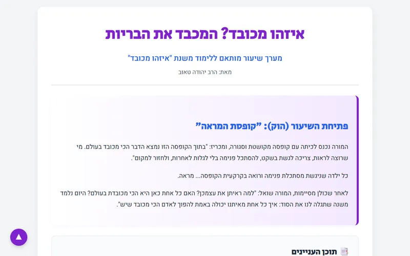
דוגמא לארבע עצות - ישום
איזהו מכובד? המכבד את הבריות - מערך שיעור איזהו מכובד? המכבד את הבריות מערך שיעור מותאם ללימוד משנת "איזהו מכו…
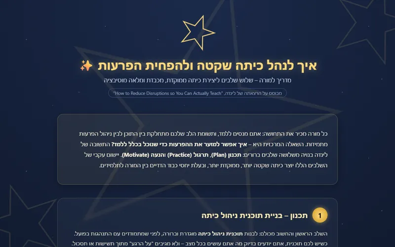
מדריר לינדה - למשמעת ב 3 שלבים
איך לנהל כיתה ללא רעש 🕊️ איך לנהל כיתה שקטה ולהפחית הפרעות ✨ מדריך למורה – שלוש שלבים ליצירת כיתה ממוקדת, מכבד…
אינדקס שיעורי הרב יעקובזון
חינוך ילדים — הרב יחיאל יעקובזון 📚✨ חינוך ילדים אינדקס לסדרת שיעורים על חינוך ילדים מאת: הרב יחיאל יעקובזון 📖 …
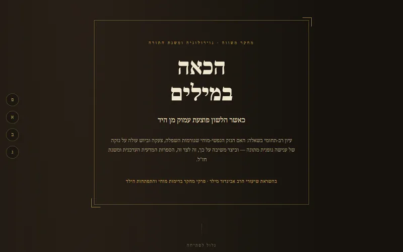
הכאה במילים
| מחקר משווה בין אלימות מילולית לענישה גופנית פ א ב ג מחקר משווה · נוירולוגיה ומשנת התורה הכאה במילים כאשר הלש…
הפער הנעלם
: מדוע חז"ל הכריעו והמחקר היסס 🔍 הפער הנעלם מדוע חז"ל הכריעו בבירור, והמחקר המדעי מהסס? תגלית מתודולוגית שמסבי…
סיפורהרב קלצקין והדרך להעניש
המורה – הדרכה, דרשות וכלים (40)
האריה בשביל
מתוך ההרצאה "מבוא לטראומה ולחוסן: השפעות חשיפה ללחץ" של פרופ' אלון חן
הוראת הלכה בעומק
נקודת המוצא של המפגש היא פשוטה ועמוקה כאחת: דבר ה' — זו ההלכה . מרגע שהתלמיד קם בבוקר ועד שהוא הולך לישון, הוא…
הזמזום בשמיים
מתוך ההרצאה "טראומה והשפעותיה על ילדים ובני נוער" של פרופ' אורית נוטמן-שורץ
החינוך בגיל הרך במבט תורני-יהודי: מחקר הלכתי ומקצועי
היהדות זיהתה את חשיבות גיל הרך אלפי שנים לפני המדע המודרני. מקורות התורה, התלמוד וההלכה מדגישים כי גיל שלוש (ג…
החלון הזהב - גילאי 3-6
גילאי 3-6: כיצד נקבע מי נהיה לכל החיים ואיך זה משפיע על עבודת השם
המבט התורני מול הפסיכולוגיה המודרנית בחינוך
המבטא הרגשי
כיצד נקבע גורלנו בשלוש השנים הראשונות לחיים
המבטא הרגשי
המדריך המקצועי לחינוך בגיל הרך - מהדורה מורחבת
המדריך המלא לרב בית הספר
מדריך מקיף לרבנים בחינוך הממלכתי-דתי
השפעת החינוך בגיל 7: המעבר הגדול לחשיבה לוגית
גיל 7 הוא "נקודת המפנה הגדולה" בהתפתחות האנושית - המעבר הקריטי מחשיבה אינטואיטיבית לחשיבה לוגית. זהו הגיל שבו …
השפעת החינוך על הגיל הרך: מחקר מקיף על בניין רגשות חיוביים
מחקר עדכני בנוירו-מדע מדגים כי 90% מהמוח מתפתח בשלוש השנים הראשונות במהלך תקופת פלסטיות עצבית קריטית. חינוך אי…
התפתחות רגשית בשנה הראשונה לחיים - מתוקן
מדריך מקצועי מבוסס מחקר מתוקן - להורים וגננות
למה אנשים לא רוצים להיות מלמדים? הפער בין רבני מתיבתא למלמדי חיידר
סיכום מהיר קיים מחסור חריף במלמדים בחברה החרדית, למרות שרמי"ם (רבני מתיבתא) בישיבות קטנות זוכים לביקוש רב על א…
מבחן המרשמלו בחינוך למצוות
מתי להשתמש - ומתי לא!
מדריך למורה - הוראת משנה
מפגש זה הוא מפגש פתיחה שמטרתו לתת קריאת כיוון בהוראת משנה. לא רשימת תכנים, אלא המשקפיים הנכונות שדרכן מסתכלים …
מדריך למורה: כיתה שלומדת
תוכנית חיזוקים, גבולות ברורים וגיוס הורים. כלים מעשיים מתוך שיחת הדרכה בניהול כיתה
מדריך מעשי להורים: השנה הראשונה שקובעת הכל
השנה הראשונה לחיי הילד שלכם היא כמו בניית בית. אם נבנים יסודות חזקים - הבית יעמוד לכל החיים. אם היסודות רופפים…
מפגש מקצועי: הוראת תורה שבעל פה ביסודי
המפגש נפתח בהזדמנות למשתתפים לשתף בהצלחות או התמודדויות מעולמם החינוכי. במסגרת המפגש הוצגו משתתפים שונים, ביני…
נספח ג': דוגמאות מוכנות למשחקים
מאגר המשחקים הכיתתיים - כל מה שצריך להתחיל מחר
עוגנים לחוסן · הדרכה
הדרכה לסטודנטים: איך מעבירים את התוכנית בכיתה · על פי ד״ר שירה גרבר ודנה בן אריה
עיקרון ע.מ.ר בהוראת התנ"ך
התנ"ך משעמם", "לא רלוונטי לחיי", "למה אני צריך ללמוד סיפורים עתיקים?"
שיטת ניהול הזמן של ד-ר שירלי הרשקו
שיעור "כיצד מלמדים גמרא" - תמליל מלא
חלק א': פתיחה והצגת האתגר
תורת הלב בחינוך הילדים - הרב קוק
תפילת המלמד הצדיק - מעמקי הנשמה
אנכי עבדך הנכנע, באתי לפני כסא רחמיך כחרס נשבר המבקש תקון. הנני יודע כי אין בי כלום, וכל מה שאני חושב שיש בי -…
תפקיד רב בית הספר - מדריך לשנת הלימודים הקרובה
השנה מעמידה לפנינו הזדמנות מיוחדת - שנת המאה לקריית אתא. זהו רגע היסטורי שבו אנחנו נקראים לחבר בין הדורות, בין…
סיום כיתה ו
׳ – סעודת הודיה סעודת הודיה // סיום כיתה ו׳ וַיַּעַשׂ אַבְרָהָם מִשְׁתֶּה גָדוֹל דרשה לסיום שנת הלימודים SCHOO…
סיום כיתה ו - 2
דרשת סיום כיתה ו׳ | סייברפאנק ⚡ רבני בתי הספר · מסיבת סיום כיתה ו׳ ⚡ סיום & שמחה דרשה לרב בית הספר 🎮 ⚡ ילדים י…
דרשה לבנות סיום כיתה ו
דרשה לסיום כיתה ו׳ – בנות | סעודת הודיה סעודת הודיה // סיום כיתה ו׳ – בנות מִי יִמָּלֵל גְּבוּרוֹת ה׳ יַשְׁמִי…
הפשט והדרש מדריך יסודי להבנת שני רבדי המקרא
מאת: הרב יהודה טאוב 🎯 פרק 1: ההקדמה - למה זה חשוב? המטרה של הספר 🧭 להבין את ההבדל בין שני רבדים: 📖 הפשט - המשמ…
מידת משנה בדרך אחרת - מדריך מעשי ללימוד משנה שמתחבר לנשמה
למידת משנה בדרך אחרת מדריך מעשי ללימוד משנה שמתחבר לנשמה מאת: הרב יהודה טאוב 🎯 פרק 1: ההקדמה - מה דברים האלה ב…
למידה מבוססת פרויקטים
PBL 📚 מדריך לימוד למידה מבוססת פרויקטים חינוך בעידן השינויים – מהנחנו המסורתי לעשייה אמיתית 14 פרקים 4 עקרונות…
מסיבת סיום - מאיפה זה בא?
מסיבת סיום – מאיפה זה בא? ✦ שיעור מיוחד ✦ 🎉 מסיבת סיום מאיפה זה בא? האם יש מקור בתורה לחגוג כשגומרים משהו גדול…
פרויקט יומי
חמד יומי – ספר השיעור 🦸 דף פתיחה לאפליקציה · חופש גדול · חמד יומי חמד יומי ספר השיעור המלא: איך הופכים את החופ…
שיטת החברותא
ספר השיעור — חכמה, חינוך ושינוי 📖 ספר השיעור — מהתמלול לידע חכמה, חינוך ושינוי אמיתי ספר מסודר לפי פרקים — מחי…
יהלומים, כוכבים וגלים פנינים וכוחות למלאכת ההוראה — מתוך ערב ההוקרה לרב משה
טאוב חוברת למורה המתחיל · מאת: הרב יהודה טאוב חוברת זו אינה אוסף זיכרונות. היא כלי עבודה. שמונה רעיונות שנאמרו…
תפילת המורה
ריבונו של עולם - תפילת המורה 🙏 ✨ ריבונו של עולם ✨ תפילת המורה לפני הכניסה לכיתה תפילה + כלים מעשיים = הצלחה אמ…
מפגש רכזי קודש - 1
סיכום מלא של המפגש — למי שלא היה 📋 סיכום מלא של המפגש — למי שלא היה 🎯 מפגש מקוון של מובילי ורכזי קודש במחוז, ל…
מפגש רכזי קודש
סיכום מלא של המפגש — Spring Torah 📋 סיכום מלא של המפגש — למי שלא היה 🌿 מפגש מקוון של מובילי ורכזי קודש במחוז, …
הרב אלקנה
| Spring Torah spring-torah | דף שבועות/עצרת 🌸 דברי הרב אלקנה תורה שבעל פה פורחת: מבחן, מיפוי, סיומי מסכתות, ש…
סדרת שיעורי חינוך – הרב יהודה טאוב (41)
ההפנמה והנתינה בחינוך: מעבר לכפייה והפעלה
הפסוק המפורסם ביותר בענייני חינוך הוא "חנוך לנער על פי דרכו, גם כי יזקין לא יסור ממנה" (משלי כב, ו). פירוש הפס…
החינוך לאושר - כיצד
מבוא האם אפשר לגדל ילדים מאושרים? שאלה זו מעסיקה הורים רבים, המביעים את רצונם העז שילדיהם יהיו "מאושרים ומצליח…
המסע אל תוך נפש האדם: תפיסת עולם ופרשנות
בשעת בוקר מוקדמת, כשקרני השמש הראשונות מפציעות מעל הרי ירושלים, מתגלה לעינינו פלא מופלא. אותה זריחה בדיוק משתק…
העידוד: עקרונות ויישומים בחינוך
לאחר שהבחנו בין הפעלה לחינוך והסברנו מדוע הפעלה (עונשים, ביקורת, צעקות, פרסים) איננה חינוך אמיתי, נתמקד כעת בש…
חינוך לבחירה והנאה רוחנית
הבחירה החופשית היא יסוד מוסד באמונה היהודית, אך אירוני שדווקא בעולם המודרני - עולם של אינספור אפשרויות בחירה -…
כוחה של הדוגמה האישית בחינוך: הבנת ההשפעה החינוכית האמיתית
בעולם החינוך המורכב, ובמיוחד בחינוך היהודי, אנו נתקלים לעתים קרובות בתפיסות מוטעות לגבי האופן שבו ילדים לומדים…
נספח: הסיפורים המלאים והלקחים מהם
הסיפור המלא לפני שנים, ניגש אליי נער נבון ואינטליגנטי במוסד שבו עבדתי. הוא גילה לי סוד שהיה תומן בליבו מזה שני…
נספח: הסיפורים המלאים לשיעור הדימוי האישי
הסיפור המלא לפני שנים קיבלתי טלפון מבחור שהיה בקיבוץ עין שמר יחד עם חבר שלו. הוא התחרט על צעד קיצוני שעשה ורצה…
נספח: סיפורים והמחשות לשיעור בנושא גיל ההתבגרות
הסיפור המלא במסגרת אחד הסמינרים לנערים שהתרחקו מהדרך, היה נער שהגיע ממשפחה דתית. לאחר דיונים רבים על הצורך בחו…
נספח: סיפורים מרכזיים מהשיעור - חינוך להנאה רוחנית
הסיפור המלא "הגיע לישיבה שלנו בחור ממשפחה טובה, בית טוב, בחור כישרוני באמת, וכבר הסתובב בכל המקומות. כששאלתי א…
שיעור 12: חינוך ליראת שמיים
בשיעור זה נעסוק בנושא החינוך ליראת שמיים. זהו נושא מרכזי בחינוך היהודי, שכן כפי שנאמר "הכל בידי שמיים חוץ מירא…
שיעור 13: תהליך הנשירה
בשיעור זה נעסוק בתהליך הנשירה - תופעה כואבת המתרחשת בקהילות רבות. נבחן את שורשי התופעה, גורמיה והדינמיקה שלה, …
שיעור 14: משמעת וביטחון עצמי
מבוא שיעור זה עוסק בקשר בין משמעת לבין ביטחון עצמי אצל ילדים. נראה כיצד ביטחון עצמי מתפתח באדם, מדוע ילדים רבי…
שיעור 15: מעמד האישה ביהדות
בשיעור זה נעסוק בנושא מעמד האישה ביהדות - נושא שלעיתים מעורר שאלות ותהיות, במיוחד בקרב חוזרים בתשובה וצעירים ה…
שיעור 16: דימוי אישי וחינוך ליראת שמיים
מבוא בשיעור זה נעסוק בחשיבות הדימוי האישי החיובי אצל ילדים, כיצד הוא משפיע על התפתחותם הרוחנית והנפשית, וכיצד …
שיעור 19: תקשורת עם ילדים
מבוא השיעור הנוכחי עוסק בנושא מורכב ובעל חשיבות רבה - תקשורת עם ילדים. במיוחד נתמקד בשני נושאים מרכזיים שעלו ב…
שיעור בנושא "מתוך שלא לשמה יבוא לשמה
מבוא בשיעור הקודם עסקנו בחינוך לעשיית מצוות לשמה, והיום נעמיק בעיקרון החשוב "מתוך שלא לשמה יבוא לשמה". עיקרון …
שיעור בנושא דימוי אישי בחינוך
מבוא הדימוי האישי הוא אחד המרכיבים המשמעותיים ביותר בהתפתחותו הרוחנית והאישית של הילד. בשיעור זה נעסוק בחשיבות…
שיעור בנושא דימוי עצמי והשפעתו על החינוך
בשיעור הקודם דיברנו על התופעה שבה דווקא בתחום שאנחנו רוצים לחנך את הילדים ולפתח את יכולותיהם, לפעמים אנחנו גור…
שיעור בנושא המשמעת בחינוך
משמעת היא אחד הנושאים המורכבים ביותר בחינוך. לעתים קרובות היא מתפרשת באופן שגוי, ומזוהה עם סגנון חינוכי נוקשה …
שיעור בנושא הענישה בחינוך
הנושא של ענישה בחינוך הפך לנושא שנוי במחלוקת בעולם המודרני. חלקים מסוימים בפסיכולוגיה המודרנית נלחמים נגד המוש…
שיעור בנושא חינוך לעשיית מצוות לשמה
מבוא הנושא המרכזי בו נעסוק היום הוא אולי העיקרי והחשוב ביותר בנושא החינוך - כיצד מחנכים ילדים לעבודת השם אמיתי…
שיעור בנושא שינוי התנהגות: כיצד
אחד הגורמים המרכזיים המונעים שינוי התנהגות אצל ילדים הוא פסימיות סמויה של ההורים עצמם. למרבה ההפתעה, הורים רבי…
שיעור חמישי - גיל ההתבגרות: אתגרים והתמודדות
נושא ההתבגרות ומשבר גיל ההתבגרות ראוי היה לסדרה בפני עצמה, אך במסגרת זו נגע בו בראשי פרקים. נדון בשאלת קיומו ש…
שיעור חמישי - גילוי חיבה: למה ועד כמה
מבוא שיעור זה עוסק בחשיבות הקריטית של גילויי חיבה ואהבה בחינוך ילדים, במיוחד לנוכח אתגרי דורנו. נבחן את הקשר ב…
שיעור חמישי - לחץ חברתי ואותנטיות בחינוך
המרצה פותח בהתייחסות לקושי המובנה בשינוי אמיתי. למרות שהרצאות יכולות להישמע משכנעות ולעורר רגשות חיוביים, נדיר…
שיעור עשירי - רגעי המפתח בחיי הילד: השפעתם על ההתפתחות הרגשית
בחיי הילד ישנם שלושה רגעים קריטיים מדי יום, שלוש נקודות מפגש שמעצבות את עולמו הרגשי ומשפיעות על התפתחותו הנפשי…
שיעור רביעי - בניית תדמית עצמית וחשיבותה
בשיעורים הקודמים דיברנו על התניה שלילית וחיובית בחינוך, ועל השפעת הביקורת והכינויים השליליים על התפתחות הילד. …
שיעור רביעי - כוח הדמיון בחינוך
מבוא בשיעורים הקודמים עסקנו בנושאי יסוד בחינוך כמו עידוד וביקורת, ובשיעור זה נעסוק בנושא שאולי נראה פחות מרכזי…
שיעור רביעי - משמעת: יסוד הקיום הרוחני
פתיחה משמעת היא מהיסודות העמוקים ביותר בעבודת ה' ובחינוך. בדורנו, כאשר רוחות זרות מנשבות ומערערות על עצם מושג …
שיעור שביעי - ביקורת והשפעתה על התדמית העצמית
בשיעור הקודם דיברנו על השפעות הלחץ החברתי על התנהגותנו ובחירותינו. הפעם נעמיק בסוגיה קשורה אך מכרעת אף יותר - …
שיעור שביעי - דמיון: סיכוי וסיכון
מבוא הנושא שנעסוק בו היום, כוח הדמיון, איננו המרכזי ביותר בין נושאי החינוך שדיברנו עליהם, אך הוא מהווה חלק משמ…
שיעור שישי - דוגמא אישית והמחשה: מעבר למילים
מבוא שיעור זה עוסק בעומק המושג של דוגמה אישית בחינוך ילדים, אך מדגיש כי השפעת המבוגר אינה רק במה שהוא אומר, אל…
שיעור שישי - לחץ חברתי: המאבק לאותנטיות
מבוא בשיעור הזה נעסוק באחד האתגרים המרכזיים בדור שלנו - הקושי לעשות את מה שאנחנו מאמינים שנכון לעשות, כאשר אנו…
שיעור שישי - משמעת: בין טבע הנפש לעבודת ה
'
שיעור שלישי - חינוך לעבודת השם: ביקורת הרסנית וביקורת נכונה
בשיעור הקודם דיברנו על תופעת ההתניה השלילית והחיובית בחינוך. היום נעמיק ונרחיב באספקט נוסף של אותה תופעה - כיצ…
שיעור שמיני - משמעת: יסוד החינוך לעבודת השם
מבוא נושא המשמעת הוא אחד הנושאים היותר מורכבים בחינוך. מצד אחד, בעולם המודרני יש חשש מפני "הורות סמכותית" ויש …
שיעור תשיעי - חום ואהבה בחינוך: יסודות והשפעות
אחד הצרכים הבסיסיים ביותר של כל אדם, ובמיוחד של ילדים, הוא הצורך בחום ואהבה. זהו צורך נפשי בסיסי שבלעדיו לא יכ…
שיעור תשיעי - חינוך לעבודת השם בשמחה (חלק א
')
שיעור: חינוך להנאה רוחנית
בפעם הקודמת דיברנו על עניין חינוך לבחירה. המסקנה העולה מהדברים היא שכדי לחנך ילד לבחירה נכונה, אנחנו חייבים לה…
שיעור: תדמית עצמית ותיוג בחינוך
מבוא בשיעור זה נעמיק בתופעה חינוכית פרדוקסלית: כיצד דווקא בתחומים שבהם אנו מבקשים לחנך את ילדינו ולפתח אותם, א…
קול המורה – מחקרים (10)
תרגילי קול יומיים - יהודה
זכור: העקביות היא המפתח! 5 דקות כל בוקר = קול בריא לשנים
מחקר קול המורה: אמונה, נשימה, השפעה
שיתוף חלק ב - מודל הוליסטי לפיתוח קול סמכותי, בריא ומהדהד למורות ומורים שיתוף חלק א: מדריך רב־תחומי לשמ…
50% מהמורים עם בעיות קול – הפיזיולוגיה, הנפש והכוח הנסתר של הקול
(מודל ו.ק.א.ל.) - גימני
טכניקת קול – נשימה סרעפתית או היגיינה קולית?
טכניקת_קול__האם_נשימה_סרעפתית_או_היגיינה_ישירה_היא_המפתח_לקול_ב - נוטבוק
להפסיק לצרוד – המדריך המעשי לשמירה על הקול
להפסיק_לצרוד__המדריך_המעשי_לשמירה_על_הקול_–_מיתוס_הסרעפת,_הידרצ - נוטבוק
דיבור מתוך הבטן ושמירת קול המורה – מחקר עומק רב-תחומי - חלק 1 - GPT
דיבור מתוך הבטן ושמירת קול המורה – מחקר עומק רב-תחומי - חלק 2 - GPT
דיבור מתוך הבטן ושמירת קול המורה – מחקר עומק רב-תחומי - חלק 3 - GPT
דיבור מתוך הבטן ושמירת קול המורה – מחקר עומק רב-תחומי - חלק 4 - GPT
דיבור מתוך הבטן ושמירת קול המורה – מחקר עומק רב-תחומי - חלק 5 - GPT
בינה מלאכותית ופרומפטים למורה (12)
משחק לימודי ב-Gemini Canvas – דוגמה מוכנה
איך יוצרים משחק לימודי עם Gemini: פותחים Canvas, מעלים חומר לימוד ומבקשים "צור משחק לימודי ל-7-10 דקות לכיתה ג…
המהפכה הטכנולוגית בכף ידך: איך Claude AI משנה את חוקי המשחק בפיתוח אפליקציות
בעולם שבו פיתוח אפליקציות נתפס כמיומנות מורכבת השמורה למתכנתים מקצועיים, Claude AI מציע מהפכה של ממש. הבינה המ…
יצירת משחק חינוכי עם קלוד
.
מדריך יצירת משחקי למידה תורניים
הכניסו URL זה בדיוק לתוך הפרומפט. הציונים יגיעו אוטומטית!
מדריך מקיף ומעודכן ליצירת תמונות לחינוך דתי - גרסה 2.0
מתאים למידג'רני, גמה, ו-API אחרים
מדריך מקיף לשכלול מצגות ב-Gamma: רעיונות, תובנות וטכניקות למצגות ברמה גבוהה
Gamma היא פלטפורמה מהפכנית ליצירת מצגות המבוססת על בינה מלאכותית, עם למעלה מ-250 מיליון מצגות שנוצרו ברחבי העו…
מדריך קנבה + בינה מלאכותית | ליאת ונגרובסקי
המדריך המלא ליצירת תכנים חינוכיים מרהיבים

למה חשוב לבקר את הבינה המלאכותית
הבאתי לקלוד את הסיפור הבא מהגמרא: ושוב מעשה ברבי חנינא בן דוסא שהלך ללמוד תורה אצל רבי יוחנן בן זכאי וחלה בנו…
רעיונות לפרומפטים - לעריכת סיפור
```🎯 אתה עורך־על לסטוריטלינג חינוכי־רגשי מעורר השראה לילדים בגילאי 6–10. תפקידך: לעבד כל סיפור שמובא אליך – ו…
יצירת כרטיסיות לימוד
שיעור מובנה כמה חלקים "תכין כרטיסיית מידע על ???? הכוללת: שאלה אמריקאית שאלת ידע והבנה שאלה מסדר חשיבה גבוה שא…
פרומפט לניהול דיון כיתתי
המקור קנית אמונה ע''י סיפור לילדים. שאדם מלמד את ילדיו הוא בעצמו זוכה לאמונה , ויש לציין שהתורה מדגישה הרבה מא…
כתיבת הרצאה
שלב 1: הגדרת תפקיד: "דמיין שאתה טוני רובינס, המרצה המוצלח ביותר של TED..." שלב 2: וידוא הבנה: "האם הבנת באופן …
חומרים לכיתה (28)
כללי הכיתה שלנו (מצגת)
נגן שיעורים ושירים
דף עבודה – תנורו של עכנאי
רבי אליעזר בן הורקנוס וחכמים נחלקו בשאלה הלכתית: תנור חרס שנחתך לחוליות והודבק מחדש בחול – האם הוא מקבל טומאה …
הלכה בחשון תשפ״ז
אחרי חגי תשרי, כל כיתה עוברת לנושא קבוע משלה. ההפניות הן לספר "קיצור שולחן ערוך מקור חיים לתלמידים" (המהדורה ה…
התאמת בעלי חיים לסביבתם
; const AnimalHabitatGame = () => { // נתוני המשחק const gameData = { desert: { name:
יחידה א' - מודעות עצמית: מהנאות הגוף לעונג הנשמה
מטרת היחידה פיתוח מודעות עצמית לסוגי ההנאה השונים, עם דגש מיוחד על זיהוי והעמקת הנאת הנשמה בחיי היום-יום.
יחידה ב' - הפרדוקס של ההנאה: למה בוחרים קטן על גדול
?
יחידה ג' - חיזוק השריר הרוחני: הופכים הנאת נשמה למיידית
מטרת היחידה פיתוח "השריר הרוחני" עד שההנאה הנשמתית תהפוך זמינה, מיידית וחזקה כמו הנאת הגוף - אבל עם כל היתרונו…
יחידה ד' - למה חשוב להרגיש כל הנאה
? המשמעות הרוחנית של כל סוג הנאה
מדריך מלא להוראת הלכות בשר וחלב
כיתה ג' (גיל 8-9) - בית ספר ממלכתי דתי גישת "מצוות = אושר בעולם הזה"
מסע הנפש – חידון ניקוד לכיתה ב׳
> <strong>שלום ילדות יקרות!</strong></p> <p>היום נלמד על דבר מאוד חשוב - <strong class=
מערך שיעור: קבלת הזולת בחיוך ובאהבה
פרטי השיעור - מטרת השיעור: ללמד ילדים לקבל את הזולת בפנים יפות על פי דברי חז"ל - גיל יעד: כיתה ב' בנות (גילאי …
עמודי הכיתה
רושמים את ההתחייבויות של התלמידים בשלושה עמודים: תורה, עבודה וגמילות חסדים.
צדק חלוקתי בתורה
מי שמרוויח יותר משלם אחוז מס נמוך יותר? זה נשמע הפוך ממה שאנחנו מכירים היום!
רְעָיוֹנוֹת תּוֹרָנִיִּים לְדִיּוּן בַּכִּתָּה - חֲנַנְיָה מִישָׁאֵל וַעֲזַרְיָה
רעיונות תורניים לדיון בכתה - חנניה מישאל ועזריה
רְעָיוֹנוֹת תּוֹרָנִיִּים לְדִיּוּן בַּכִּתָּה - יוֹסֵף מוֹקִיר שַׁבָּת
רעיונות תורניים לדיון בכתה - יוסף מוקיר שבת
רְעָיוֹנוֹת תּוֹרָנִיִּים לְדִיּוּן בַּכִּתָּה - נַקְדִּימוֹן בֶּן גּוּרְיוֹן
רעיונות תורניים לדיון בכתה - נקדימון בן גוריון
רְעָיוֹנוֹת תּוֹרָנִיִּים לְדִיּוּן בַּכִּתָּה - סִפּוּר רַבִּי עֲקִיבָא
רעיונות תורניים לדיון בכתה - ספור רבי עקיבא
שיעור ע.מ.ר - "זכויות ללא חובות? לא בקטע שלנו
!" כשמקבלים מתנה גדולה - מה האחריות שמגיעה איתה? דברים ג', ח-יט
שיעור ע.מ.ר - מ"זכור טובה" ל"שכחת הכרת הטוב
כשהחברה שוכחת את מי שהציל אותה - מה קורה אחר כך? שמות א', ח-יד
שיעור ע.מ.ר - מאבק הירושה בבית דוד
כשהמלך מזדקן - מי יירש את הכס?" מלכים א פרק א
שיעור ע.מ.ר - סיפור המרגלים: אמונה מול פחד
דברים פרק א, פסוקים כב-מו
שיעור ע.מ.ר - תחילת השעבוד במצרים
מדמוקרטיה לדיקטטורה: איך זה קורה?" שמות פרק א, פסוקים ח-יד
איך לספר סיפור
ההרצאה הזו של עומר לווין היא פנינה מקצועית לכל מי שרוצה להבין לעומק את ההבדל בין "לבנות סיפור" ל"לספר סיפור"…
🗂 טבלת רגשות – מסודרת לפי קטגוריות ועוצמות
🗂 מילון רגשות אישי – גרסה מלאה 😨 פחד חלש : חשש, אי נוחות, פרפרים בבטן בינוני : חרדה, דאגה, עצבנות, חשד חזק …
מה ללמוד בחודש אלול בבית ספר?
מבוא: מצוקת הזמן והצורך בהכרעה חינוכית מערכת החינוך בישראל ניצבת בפני אתגר חינוכי ייחודי בחודש אלול – בשל רי…
צניעות מתוך אהבה - מדריך נפלא לחינוך בצניעות
ניתן לשחק כאן על החומר
אליעזר ורבקה מילים וביצועים אדמון ידידיה 1894-1982 מלחין מוזיקה
קנה עכשיו
סיכומי מחקר על המאמרים שלי (3)
סיכום מחקר: בזיעת אפך – קללה, תרופה או הדרך לחיות משמעות
ה_לחיות_משמעות__המהפך_המפת מצאתי כתוב בזה"ל "סיכום הקללות שבתורה". א) בזעת אפך תאכל לחם, ארורה האדמה בעבורך, ב…
סיכום מחקר: כשאור צומח מחושך
ים_והיישום_המעשי_להתמודדות_עם
סיכום מחקר: בזיעת אפיך – האם הקדמה הטכנולוגית ברכה או קללה
סיכום נוטבוק - - בזיעת_אפיך__האם_הקדמה_הטכנולוגית_היא_ברכה_או_קללה_קיומית_בעידן_
אפליקציות ומדריכי עיצוב (17)
יצוא קוד HTML לקובץ
כלי להדבקת קוד HTML ושמירתו כקובץ
מדריך עיצוב 1
מדריך עיצוב HTML – כל הסגנונות 🎨 מדריך עיצוב HTML כל הסגנונות, הצורות, הצבעים והרעיונות – עם פרומפט מוכן לכל א…
מדריך עיצוב 2
מדריך עיצוב HTML – חלק ב' | 40 סגנונות + פרומפטים ✦ חלק ב׳ – עם פרומפטים 40 סגנונות + פרומפט מוכן כל כרטיס כול…
מדריך חלק 3 - גדול
מדריך HTML – חלק ג׳ | 50 סגנונות + פרומפטים ✦ חלק ג׳ – 50 סגנונות + פרומפטים 50 סגנונות + פרומפט לכל אחד 🎬 10 …
מדריך עיצוב 4
מדריך HTML – חינוך יהודי | בנים ובנות | 50 סגנונות 👦 בנים 👧 בנות ✡️ שניהם חינוך יהודי בנים ובנות 50 סגנונות HT…
קטלוג כתבים מלא
✦ קטלוג כתבים מלא ✦ כל סגנון כולל שם הפונט + דוגמה + פרומפט מוכן להעתקה ✍️ קטגוריה א׳ — כתב יד #01 Dancing Scr…
קטלוג כתבים עבריים
מלא ✦ 72 כתבים עבריים ✦ כל סגנון תומך באותיות עבריות — עם פרומפט מוכן לכל בוט 📜 קטגוריה א׳ — Frank Ruhl Libre …
סגנונות של תמונות 1
סגנונות של תמונות
כל סגנונות הדפים שיצרנו
קטלוג מרוכז של תבניות HTML, עם שם הסגנון, מתי להשתמש בו, ומה בדיוק לכתוב בפרומפט כדי לבקש אותו שוב. איך להשתמש…
מדריך ZoomIt למורים
מדריך מהיר ומעשי לשימוש בתוכנה החינמית של Microsoft
ניהול זמן וכלים טכנולוגיים לרב
שלום לכם, אנחנו בשעה טובה במפגש השלישי והאחרון של הקורס שלנו על שימוש בטכנולוגיה ובינה מלאכותית בעבודת הרב. המ…
הופך טקסט ל HTML ו PDF
יצוא קוד HTML לקובץ יצוא קוד HTML לקובץ מוכן הדבק כאן קוד HTML, תן שם לקובץ, ולחץ "הורד קובץ HTML" קוד HTML: ⬇…
מנהל הפרומפטים
מנהל פרומפטים
מקצר שירים לצלצול
חותך שירים חותך שירים העלה קובץ, הגדר זמנים, הורד MP3 🎵 לחץ כדי לבחור קובץ שמע MP3, WAV, OGG, M4A... אורך הקוב…
מפריד אנשים בתמונה
העלה תמונה קבוצתית — הכלי יזהה כל אדם ויחלץ אותו לתמונה נפרדת נוצר על ידי יהודה טאוב נשמח לשמוע איך נהניתם | W…